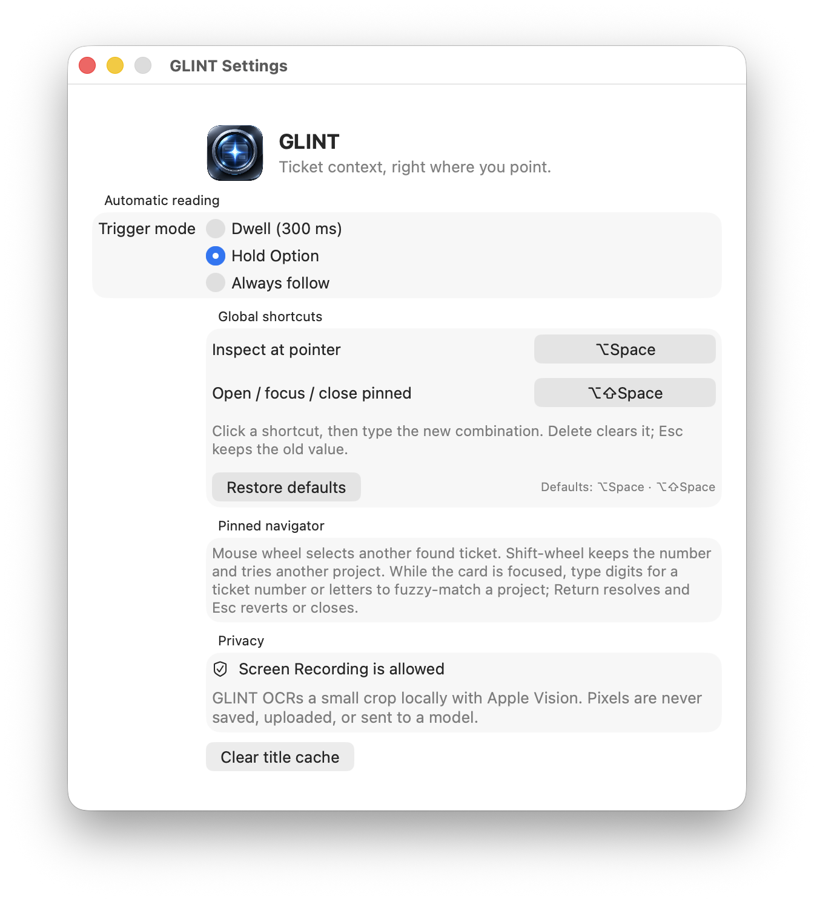
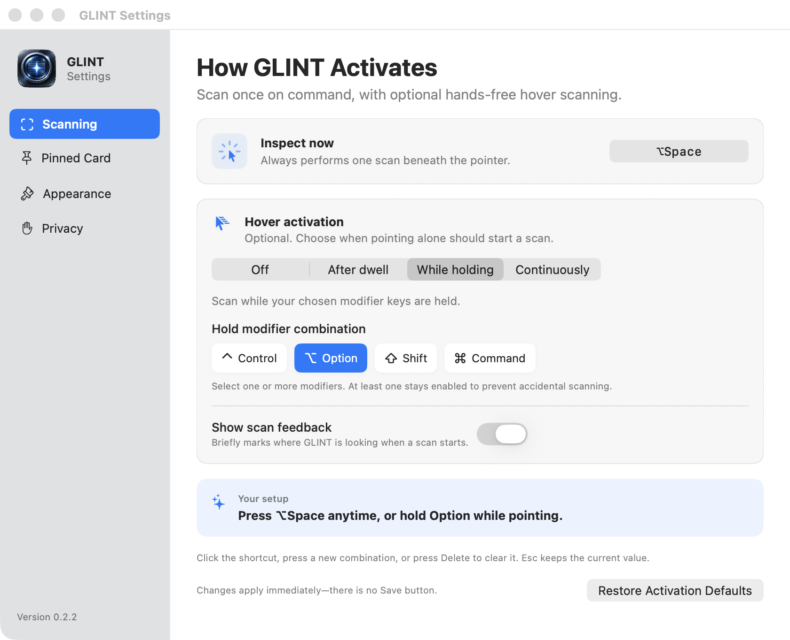
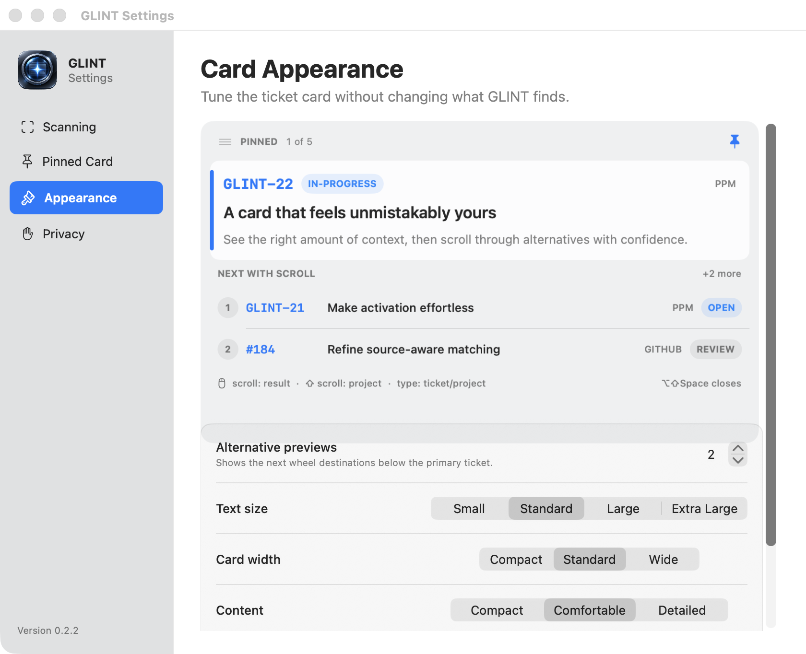
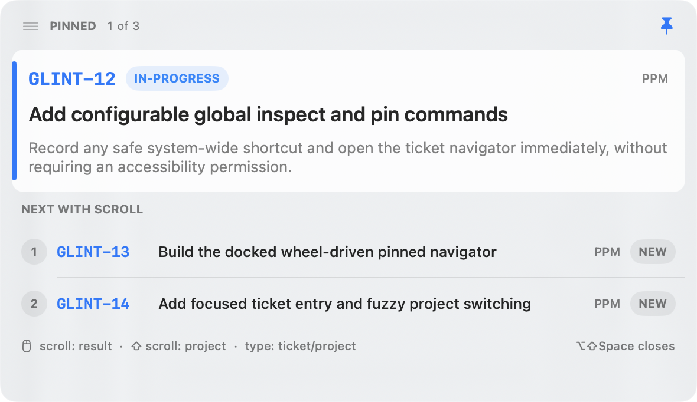

GLINT 0.3.0 visual QA
A before/after review of activation settings and the ticket-card system. The new hierarchy makes the one-shot shortcut primary, moves optional hover behavior beside it, and makes every card choice visible before it changes the live overlay.
GLINT-19 scan feedback
GLINT-20 smart resolution
GLINT-21 activation UX
GLINT-22 card appearance


After · Appearance
A live card preview with alternative count, text size, width, density, and surface controls.


Activation is legibleOne-shot Inspect and optional hover scanning no longer compete for the same mental model.
Customization is previewedEvery visual preference updates sample data locally before affecting real cards.
Alternatives are discoverableUpcoming results are visible as rows before the user reaches for the wheel.
Privacy remains explicitVisual feedback is capture-excluded; screenshots here use dedicated debug probes only.